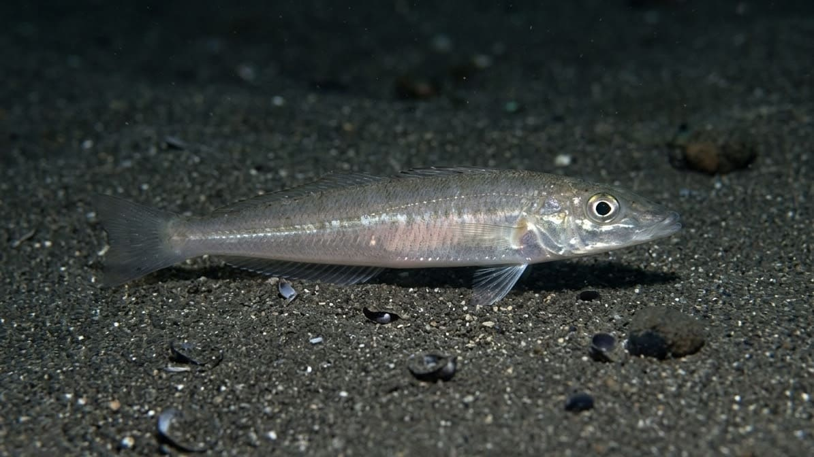

「海の女王」シロギス攻略ガイド！投げて探る、戦略的ゲームフィッシングの魅力

銀白色に輝く美しい魚体と、天ぷらに代表される上品な味わいから「海の女王」と称されるシロギス。20cm前後の可愛らしいサイズ感とは裏腹に、竿先を引ったくるような鋭く力強いアタリを出して釣り人を魅了します。初心者向けの「チョイ投げ」から、100m以上先を狙う本格的な「投げ釣り」まで楽しみ方は様々ですが、シロギス釣りの本質は単に遠くへ飛ばすことではありません。「広大な海の中から、魚が潜む地形の変化と距離を推理する」という、非常に戦略的で奥の深いルアーゲームのような面白さが詰まっています。
1. シロギスの生態と、釣れる「季節・場所」
シロギスは北海道南部から九州までの沿岸に広く分布し、群れを作って行動する魚です。成長すると30cmを超えることもあり、その強烈な引きと大きさから釣り人の間では「ヒジタタキ」という敬称で呼ばれることもあります。
季節ごとの動き
シロギスは水温の変化によって居場所を変える回遊魚です。
- 春〜夏（ハイシーズン）：初夏の産卵期に向けて、水深の浅いサーフ（砂浜）や防波堤周辺に群れで接岸してきます。
- 秋：浅場でも十分に数が狙え、近距離（10〜20m）の波打ち際でアタリが連発することもある好シーズンです。
- 冬：水温低下とともに深場（水深20〜30mなど）へと落ちて越冬するため、陸っぱりよりも船釣りや水深のある港湾部が有利になります。
狙うべきは「ただの砂底」ではなく「変化」
シロギスは砂泥底を好み、砂と一緒に多毛類（ゴカイなど）や甲殻類を吸い込むように捕食します。しかし、砂漠のように平坦な場所を適当に泳いでいるわけではありません。以下のようなどこかに「変化」がある場所が、エサの集まる一級ポイントになります。
- カケアガリ：海底の水深が急に浅く（深く）斜めになっている場所。
- ヨブ：波の力で海底の砂がえぐられ、凹凸や波状になっている場所。
- 根まわり・ミオ筋：沈み根（岩礁）と砂地の境目や、船の通り道として深く掘られた溝状の場所。
2. タックルとエサの極意
防波堤からの手軽な釣りか、砂浜からの遠投かで道具立てが変わります。
- お手軽チョイ投げスタイル：防波堤や小規模な砂浜なら、ルアーロッド（エギングやシーバス用など）に小型〜中型のスピニングリールで十分に楽しめます。オモリの軸が動いて食い込みが良い「ジェットテンビン」を使うのがおすすめです。
- 本格投げ釣りスタイル：100m以上沖のブレイク（カケアガリ）を狙うなら、3.6〜4.2mの投げ専用竿に、L型テンビンや海草テンビン（20〜35号程度）を組み合わせます。
エサ付けは「小さく・美しく」が鉄則
エサはアオイソメが万能ですが、細身で動きの良いジャリメや、昔から特効エサとされるチロリ（イワイソメ）を状況で使い分けるのがベストです。シロギス釣りにおいて「エサがデカければ大物が釣れる」という考えは捨てましょう。
- 遠投時の空気抵抗を減らし、キャスト切れを防ぐためにもエサは大きく付けすぎないことが重要です。
- 細い虫エサを適度な長さに切り、ハリに対して真っ直ぐ、かつハリ先をしっかり出すように美しくセットするのが釣果アップの秘訣です。
3. キャスティング（投擲）の基本とコツ
シロギス釣りでつまずきやすいのが「投げる」動作です。腕力任せにフルスイングするのは、仕掛けが絡む原因になるばかりか飛距離も出ません。
- 竿の反発力を活かす：力でオモリを投げるのではなく、リールを持つ手で竿を前に押し出し、竿尻を持つ手で胸元へ引きつける「テコの原理」を使います。これにより竿がしっかり曲がり、元に戻る反発力でオモリが飛んでいきます。
- リリース角度は約45度：竿が前方70〜80度まで傾いたタイミングで指を離し、オモリが斜め45度上空へ射出される軌道を意識しましょう。
- 着水前の「サミング」：オモリが海面へ落ちる直前に、リールの糸の放出を指で軽く抑えて止めます。これにより、空中で仕掛けが一直線に伸び、道糸への糸絡みを劇的に防ぐことができます。
4. 必修テクニック：「サビキ」で海底を読み解く
仕掛けを投げ入れたら、ただ待つのではなく自ら魚を探しに行きます。この仕掛けをゆっくり手前へ引きずってくる動作を「サビキ（引き釣り）」と呼びます。
- 海底の解像度を上げる：オモリが着底したら、ゆっくりとリールを巻くか、竿を横にサビいて仕掛けを手前に移動させます。すると、手元に「ザラザラ（砂）」「ゴツゴツ（石）」「急に重くなる（カケアガリ）」といった海底の地形情報が伝わってきます。
- 変化で食わせる：重く感じるカケアガリやヨブのくぼみに差し掛かったら、そこで仕掛けを少し止めてアタリを待ちます。
- 距離をメモライズする：シロギスは群れで固まっているため、1匹釣れたら同じ距離・同じ方向に連続して潜んでいる可能性が大です。アタリがあった距離（例：80m付近など）を必ず記憶し、次もその距離を重点的に攻めるのが数を伸ばす最大のコツです。
アワセ（フッキング）について
「ブルブルッ！」と気持ちの良いアタリが出ても、焦って竿を大きくあおる必要はありません。そのまま一定の速度でゆっくりと引き続けることで、魚が自然にハリ掛かり（向こうアワセ）してくれます。さらにそのまま引き続けることで、2匹、3匹と連掛け（多点掛け）を狙うこともシロギス釣りの醍醐味です。
📍 関東の生息・釣果スポット
※マップ上の赤いドットが釣れるポイントです。